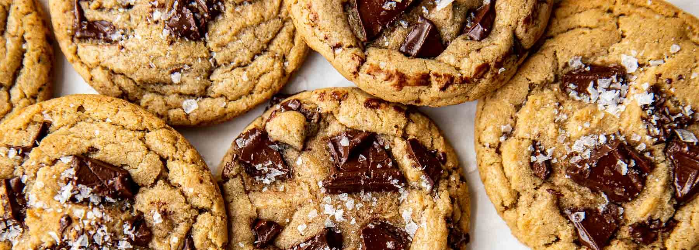

Welcome to the delightful world of cookies! In this webpage, we will explore everything about them — from their history to baking tips, fun facts, and must-try recipes.
All about cookies.
literally.

:max_bytes(150000):strip_icc()/Simply-Recipes-Strawberry-Cheesecake-Cookies-LEAD-62b7338475d64e91ae3d8ad044eaf4ba.jpg)

History of cookies
Cookies are believed to have originated in 7th-century Persia (modern-day Iran), one of the first regions to cultivate sugar. These early treats were simple mixtures of sugar, flour, and water.
At first, this mixture was used to test oven temperature, but later, they were commercialized as a treat of their own due to their long shelf life and delicious taste.
As Muslim conquests and trade routes expanded, cookies spread to Europe alongside them. By the 14th century, they were common in royal courts and street markets alike.
Cookies made their way to America with early settlers, and in the 1930s, Ruth Wakefield accidentally invented the iconic chocolate chip cookie at her Toll House Inn in Massachusetts.
Must-try recipes
- Brown butter chocolate chunk cookies
- Lemon curd cookies
- Strawberry cheesecake cookies
- Chocolate crinkle cookies
- Chai cookies
- Double chocolate cookies
- Pumpkin spice snickerdoodles
Recipes chart
| Name | Principal ingredients | Prominent flavors | Ideal for... | Dificulty |
|---|---|---|---|---|
| Classic ChocChip | Flour, butter, chocolate chips | Sweet and creamy | Any occasion | ★☆☆☆☆ |
| Honey and oats | Oats, honey, cinnamon | Natural and soft | Healthy breakfasts | ★☆☆☆☆ |
| Red Velvet | Cacao, vanilla, red food dye | Soft and chocolaty | Gifts and parties | ★★☆☆☆ |
| Glazed lemon | Lemon zest, butter, powdered sugar | Refreshing and citric | Hot afternoons or eating with tea | ★★☆☆☆ |
| Double Chocolate | Powdered cocoa, dark chocolate chips | Intense and chocolaty | Strong sweet cravings | ★★☆☆☆ |
| Carrot cookie | Grated carrot, cinnamon, nutmeg | Sweet with spiced notes | Lighter options | ★★☆☆☆ |
| Peanut butter | Peanut butter, brown sugar | Creamy and salty-sweet | After exercising | ★☆☆☆☆ |
| Oats and chai | Oats, chai mix, honey | Fragrant and conforting | Cold or rainy days | ★★★☆☆ |
| Coconut and white chocolate | Grated coconut, white chocolate, vanilla | Tropical and soft | Mentally escaping to the beach | ★★☆☆☆ |
| Matcha and almonds | Matcha powder, almonds, sugar | Earthy and delicate | For people who are looking for something different | ★★★☆☆ |